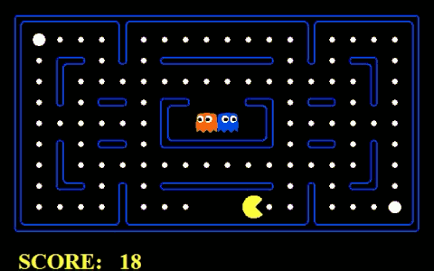
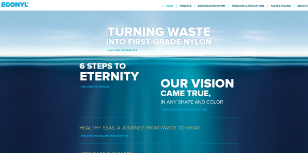

Pacman
This is my first project from the second semester of my first year.
At first, it was a struggle, but as time went on, I got used to it.
I also learned and experienced how to create the map for Pac-Man.
Because of this project, I realized how important teamwork really is.

Web Pages
This is my first webpage project with an ocean theme.
It wasn’t too difficult because I already have some experience.
This project is for the first semester of my second year in college,and it isn't hard because
I really enjoy designing.

Portfolio
This is my portfolio that I created this semester for our final project.
It showcases my skills, creativity, and the projects I have worked on.
Through this portfolio, I was able to apply
what I have learned and improve my design
and development abilities.